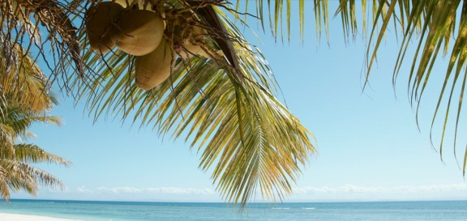

Nestled along the picturesque northwest coast of Madagascar, Mahajanga is a vibrant port city that boasts a rich cultural heritage, stunning beaches, and a culinary scene that seaffod lovers dream of.
Known for its warm climate, laid-back atmosphere, and promixity to the Mozambique Channel, Mahajanga is a paradise for those seeking fresh, flavortful, and diverse seafood dishes. Let's dive into the culinary treasure of this coastalgem.